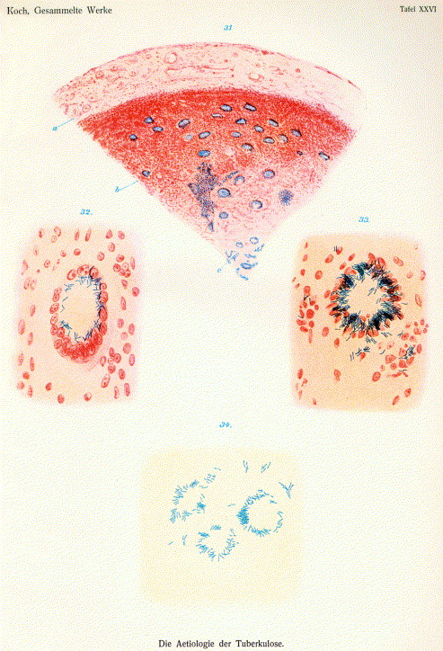
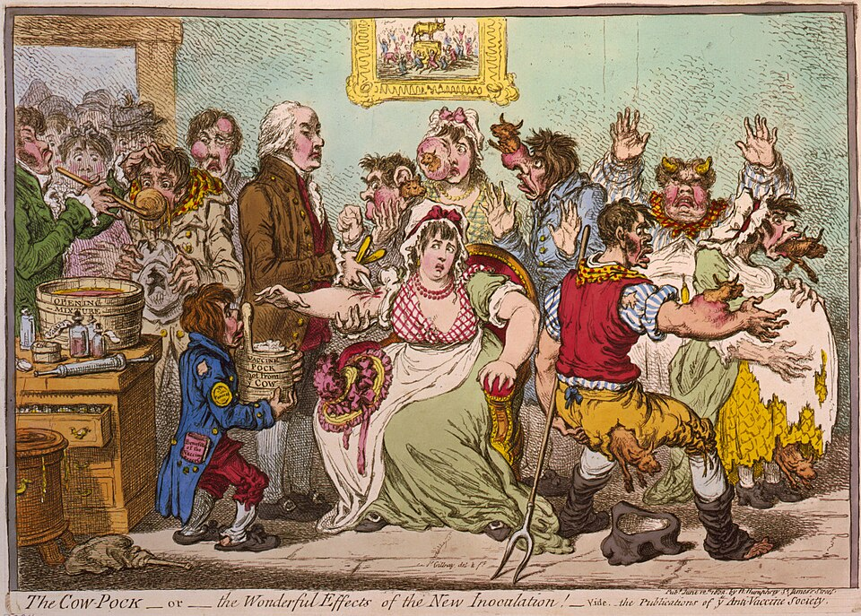
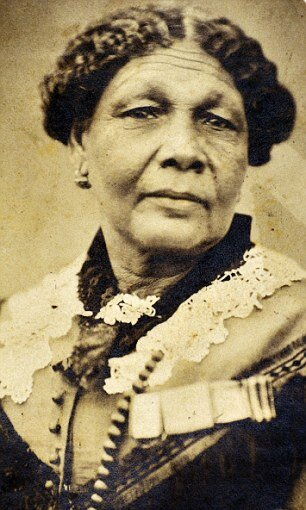
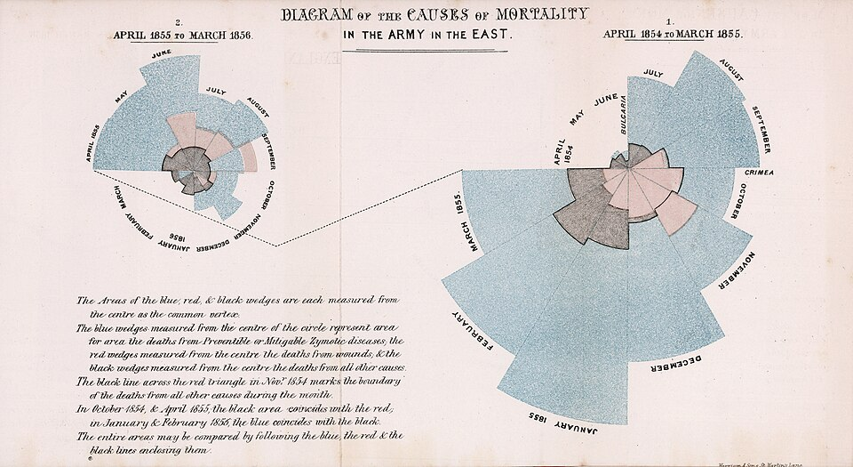
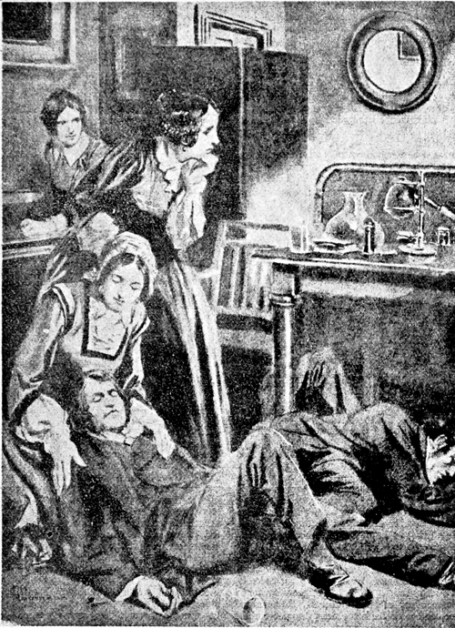
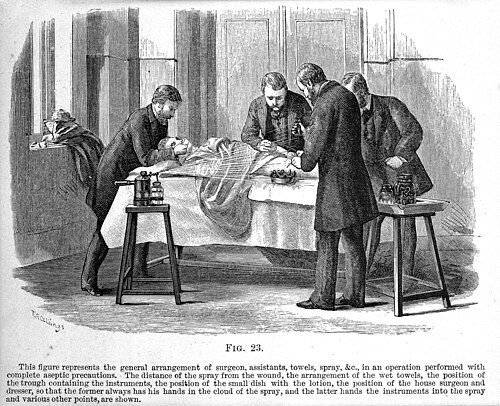
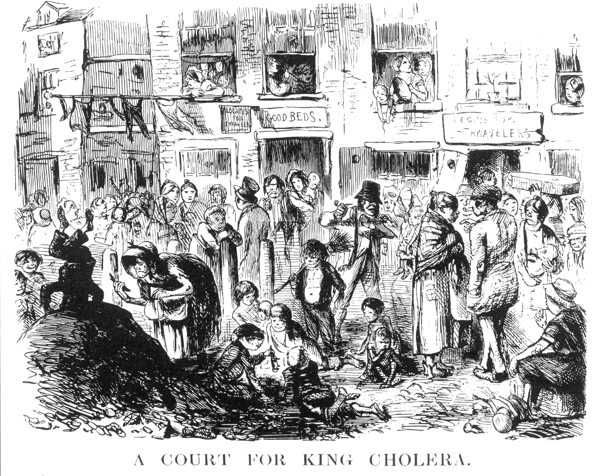

18th & 19th C
Paper 1: Medicine Through Time with the Western Front
Course Textbook
Enquiry: How has medicine changed from c1250 to the modern day?
Contents
|
Lesson 1: KT3.1: Ideas on Causes: Pasteur’s Germ Theory & Koch’s Microbe Hunters (c.1861–c.1883)
|
|
|
Lesson 2: KT3.2: Approaches to Prevention: Edward Jenner & The Smallpox Vaccine (1796–1853)
|
|
|
Lesson 3: KT3.3: Improvements in Hospital Care: Florence Nightingale, Mary Seacole & The Sanitary Revolution (1854–1863)
|
|
|
Lesson 4: KT3.4: The Surgical Revolution: Simpson, Lister & The Conquest of Pain and Sepsis (1847–1870s)
|
|
|
Lesson 5: KT3.5: Public Health & Cholera: John Snow, The Broad Street Pump & The 1875 Public Health Act (1854–1875)
|
|
L1: KT3.1: Ideas on Causes: Pasteur’s Germ Theory & Koch’s Microbe Hunters (c.1861–c.1883)[[SRC_MARKER:L10_Start]]
Learning Objectives
Explain how Louis Pasteur’s swan-neck flask experiments disproved Spontaneous Generation.
Analyze Robert Koch’s forensic laboratory innovations and how they isolated specific pathogens.
Evaluate the Diagnostic-Therapeutic Lag: why understanding causes did not immediately produce cures.
In 1860, the greatest scientific minds in Europe gathered at the Sorbonne in Paris to witness a duel of ideas. For centuries, orthodox science taught that rotting meat magically generated maggots and foul swamp water spontaneously spawned microbes out of nothing. Armed with glass flasks drawn out into elegant, curving swan necks, a French industrial chemist named Louis Pasteur set out to prove that life only comes from life. Yet, when Pasteur announced that invisible, airborne microorganisms invaded human bodies to cause disease, the British medical establishment sneered. It took twenty years of forensic laboratory detective work by a German country doctor named Robert Koch—staining bacteria with purple industrial dyes and photographing them under microscope lenses—to finally smash two thousand years of superstition and bad smells.
Did you know?
- [object Object]
- [object Object]
- [object Object]
Vocabulary Check
The Odd One Out: Circle ONE term that does not belong with the others. Explain your reasoning: What historical connection links the other terms, and why is your chosen term different?
Spontaneous Generation | Germ Theory (1861) | Agar Jelly | Aniline Dyes | Koch’s Postulates (1882)
Teacher Model / Pupil Reasoning:
[[SRC_MARKER:L10_Source_0]]
Source S1: Louis Pasteur in his Laboratory (1885) by Albert Edelfelt

Albert Edelfelt's celebrated 1885 portrait depicting Louis Pasteur examining a phial in his laboratory at the École Normale Supérieure in Paris, surrounded by experimental glassware.
[[SRC_MARKER:L10_Source_1]]
Source S2: Robert Koch’s Microphotographs of Tuberculosis (1882)

Tafel XXVI from Robert Koch's landmark publication Die Aetiologie der Tuberkulose, showing Mycobacterium tuberculosis stained with aniline methyl violet dye within infected lung tissue.
[1.1] At the dawn of the 1860s, European understanding of disease causation was mired in intellectual confusion. While Antonie van Leeuwenhoek had observed microscopic "animalcules" in 1676, natural philosophers assumed these organisms were harmless oddities. The dominant scientific paradigm remained Spontaneous Generation—the belief that rotting matter naturally generated living microbes out of decay, just as rotting meat appeared to spawn flies and maggots. Furthermore, the medical profession clung tenaciously to miasma theory, maintaining that poisonous, foul-smelling vapors rising from cesspools and decomposing organic matter poisoned the blood.
[1.2] In 1859, the French Academy of Sciences offered the prestigious Alhumbert Prize to anyone who could solve the mystery of spontaneous generation through definitive, repeatable experimentation. The challenge was accepted by Louis Pasteur, an energetic French chemist working at the University of Lille. Hired by industrial manufacturers whose beer, wine, and milk were spoiling, Pasteur made the crucial observation that fermentation was caused by living microscopic yeasts, while souring was caused by lactic acid microbes. Pasteur hypothesized that microbes did not generate spontaneously from liquids, but were living organisms carried invisibly through the atmosphere.
[[SRC_MARKER:L10_Source_3]]
Source S3: Louis Pasteur in his Laboratory (1885) by Albert Edelfelt
Albert Edelfelt's celebrated 1885 portrait depicting Louis Pasteur examining a phial in his laboratory at the École Normale Supérieure in Paris, surrounded by experimental glassware.
Q1. Study Pasteur intently examining a glass phial under natural window light, surrounded by delicate glassware and observation notebooks. How does this portrait depict the shift from abstract medical philosophy to meticulous laboratory science?
[2.1] In 1861, Pasteur conducted his legendary series of experiments before the French Academy in Paris, publicly dueling with Félix Pouchet, director of the Rouen Natural History Museum and a fierce champion of spontaneous generation. Pasteur prepared nutrient yeast broths inside glass flasks, heating them to boiling point to destroy all pre-existing microbial life. Crucially, using a blowpipe, Pasteur drew out the long glass necks of the flasks into elegant, curving S-shapes (Source A). Air was permitted to circulate freely into the flask through the open end, but airborne dust particles, fungal spores, and bacteria were trapped by gravity and condensation in the downward dip of the curve.
[2.2] The results were conclusive: the nutrient broth inside the swan-neck flasks remained sterile, fresh, and crystal clear indefinitely. However, if the neck was snapped off, or the flask was tilted so the liquid washed into the bend and drew back, microbes multiplied at astonishing speed, turning the broth turbid and rotten within hours. In 1861, Pasteur published his historic Germ Theory, formulating two revolutionary conclusions: first, life only arises from pre-existing life; second, microscopic airborne organisms cause fermentation and decay. Pasteur then made the daring intellectual leap: if invisible microbes could turn wine sour, they could also invade the tissues of human beings and cause contagious disease.
[[SRC_MARKER:L10_Source_4]]
Source S4: Robert Koch’s Microphotographs of Tuberculosis (1882)
Tafel XXVI from Robert Koch's landmark publication Die Aetiologie der Tuberkulose, showing Mycobacterium tuberculosis stained with aniline methyl violet dye within infected lung tissue.
Q2. Robert Koch stained Mycobacterium tuberculosis using methyl violet dye and captured these images under a microscope. Why did producing clear, reproducible visual evidence of specific bacteria succeed in convincing skeptical British doctors where Pasteur’s theoretical papers had failed?
[3.1] Despite Pasteur’s brilliance, his Germ Theory encountered formidable resistance in Britain. Pasteur was an industrial chemist, not a qualified physician; while he proved microbes caused beer to turn sour, he had not proven which specific germ caused which specific human disease. Powerful British authorities—led by Dr Henry Bastian, Professor of Pathological Anatomy at University College London—violently opposed Germ Theory through the 1870s. In the British Medical Journal, Bastian pointed out that because transparent bacteria lived habitually inside healthy human throats and intestines, it was absurd to blame them for lethal epidemics.
[3.2] The diagnostic deadlock was broken by Robert Koch, a meticulous country doctor working in Imperial Germany. Koch transformed microbiology into an exact forensic science through four breakthrough innovations: first, using solid culture media (nutrient agar jelly derived from seaweed in flat glass Petri dishes) instead of contaminated liquid broths, allowing pure, isolated bacterial colonies to be grown; second, staining transparent microbes with synthetic industrial aniline dyes (methyl violet and methylene blue), making bacteria stand out sharply against human tissue; third, fitting Zeiss compound microscopes with precision oil-immersion lenses; and fourth, photographing bacterial specimens with camera attachments (Source B), producing permanent, irrefutable photographic evidence.
[3.3] Between 1876 and 1883, Koch and his disciples isolated the specific causative bacterial pathogens for anthrax (1876), wound infections (1878), tuberculosis (1882), and cholera (1883). Koch formulated his celebrated Four Postulates: rules to prove a specific microbe causes a specific disease. Koch shifted medicine from vague guesswork to targeted bacteriological identification.
[4.1] British medical skepticism finally collapsed in the late 1870s and 1880s. The physicist John Tyndall delivered influential public lectures linking Pasteur’s optical physics to atmospheric germ particles; surgeon William Watson Cheyne translated Koch’s bacteriological treatises into English; and Koch’s stunning 1882 microphotographs of tuberculosis bacilli left miasma believers without intellectual defence. British public health officials ceased hunting for bad smells and began systematically sterilizing surgical theatres, filtering municipal water supplies, and tracing contaminated milk.
[4.2] Historiographically, historians emphasize the Diagnostic-Therapeutic Lag: while Pasteur and Koch revolutionized the scientific understanding of disease causation, their work produced few immediate treatments. Isolating the tuberculosis bacillus in 1882 did not cure a single patient dying of consumption, because effective antibiotics (streptomycin) lay sixty years in the future. The immediate practical fruit of Germ Theory lay in prevention: it validated Joseph Lister’s antiseptic carbolic techniques, guided municipal sewer engineering, and enabled Pasteur to engineer lab-attenuated vaccines for chicken cholera (1879), anthrax (1881), and rabies (1885). Together, Pasteur and Koch had destroyed two millennia of humoural theory and established modern scientific medicine.
Active Tasks
Q3. ‘Louis Pasteur’s Germ Theory was more important than Robert Koch’s discovery of specific bacteria in advancing medical understanding c1860–c1890.’ How far do you agree? Explain your answer [16+4 marks].
L2: KT3.2: Approaches to Prevention: Edward Jenner & The Smallpox Vaccine (1796–1853)[[SRC_MARKER:L11_Start]]
Learning Objectives
Distinguish between smallpox inoculation (variolation) and Jennerian cowpox vaccination.
Analyze the multi-faceted opposition to Jenner’s vaccine (religious, medical, and commercial).
Assess the role of the British government and the limitations of Jenner’s breakthrough.
In the eighteenth century, smallpox was the undisputed king of death in Britain, killing one in ten infants and leaving survivors blinded, mutilated, and scarred with deep pitted craters across their faces. The only protection was terrifying: paying a doctor to cut open your arm and rub in living pus taken from an active smallpox scab—a process called inoculation that killed thousands and sparked deadly epidemics. In 1796, a quiet Gloucestershire country doctor named Edward Jenner noticed something remarkable about local milkmaids: their creamy skin was completely unblemished by smallpox. By testing rural folklore on a young boy using pus from a dairy cow’s udder, Jenner invented vaccination. Yet, rather than hailing him as a hero, London doctors denounced him as a charlatan, preachers roared from pulpits that injecting beastly matter into humans defied Almighty God, and furious mobs carried placards showing vaccinated children sprouting cow heads and cloven hooves.
Did you know?
- [object Object]
- [object Object]
- [object Object]
Vocabulary Check
The Golden Sentence: Choose TWO terms from the word bank. Write ONE grammatically sophisticated, historically accurate sentence connecting them using a causal conjunction (because, although, or consequently):
Inoculation (Variolation) | Vaccination | Cowpox (Vaccinia) | 1852 Compulsory Act | Anti-Vaccination League
Teacher Model / Pupil Sentence:
[[SRC_MARKER:L11_Source_0]]
Source S1: Portrait of Dr Edward Jenner (1802) by James Northcote RA

Portrait of Edward Jenner resting against an English oak tree in the Gloucestershire countryside, with dairy cattle and a milkmaid visible in the rural background.
[[SRC_MARKER:L11_Source_1]]
Source S2: James Gillray: The Cow-Pock or the Wonderful Effects of the New Inoculation! (1802)

James Gillray's satirical cartoon showing Edward Jenner administering cowpox vaccine at the Smallpox Hospital, while terrified patients sprout cows from their bodies.
[1.1] Throughout the eighteenth century, smallpox (Variola major) was the most terrifying epidemic killer in Britain. An airborne viral infection that spread effortlessly through crowded tenements, smallpox killed an estimated 40,000 people in Britain every year, claiming the lives of one in three newborn infants. Victims suffered agonizing fevers, severe vomiting, and erupted into thousands of fluid-filled pustules that fused together across the body. Those who survived were often left blind, disfigured, or permanently scarred with grotesque pitted pockmarks.
[1.2] The only known protection was inoculation (or variolation), brought to Britain from Turkey in 1721 by aristocrat Lady Mary Wortley Montagu. Inoculation involved using a lancet to scrape live, infectious smallpox pus from a sick patient’s pustule directly into a cut on a healthy person’s arm. While patients frequently survived with a milder infection and gained lifelong immunity, the procedure was fraught with mortal peril: roughly 2% to 3% of inoculated patients died from full-blown smallpox, and inoculated individuals became highly contagious vectors who ignited fresh community epidemics. Furthermore, commercial inoculators like the Sutton and Dimsdale families charged extortionate fees (up to 20 guineas), making prevention a luxury monopoly reserved exclusively for the wealthy.
[[SRC_MARKER:L11_Source_3]]
Source S3: Portrait of Dr Edward Jenner (1802) by James Northcote RA
Portrait of Edward Jenner resting against an English oak tree in the Gloucestershire countryside, with dairy cattle and a milkmaid visible in the rural background.
Q1. Notice Dr Jenner resting his arm upon an oak tree while dairy cows and a milkmaid carry milk pails in the background. Why did Jenner’s countryside observations of dairymaids and cowpox prove more revolutionary than the book-learning of London’s elite physicians?
[2.1] In the rural Vale of Berkeley in Gloucestershire, country physician Dr Edward Jenner (Source A) observed a long-standing piece of local dairy folklore: milkmaids who contracted cowpox (vaccinia)—a mild, localized blistering disease caught from cows’ udders—never contracted lethal smallpox during regional epidemics. Unlike smallpox, cowpox was entirely harmless to humans, causing only mild blisters on the hands and fingers.
[2.2] Jenner determined to subject this folk belief to rigorous scientific testing. On 14 May 1796, Jenner extracted pus from a fresh cowpox vesicle on the hand of dairymaid Sarah Nelmes and scratched it into the arm of eight-year-old James Phipps, the son of Jenner’s impoverished gardener. Phipps developed a slight fever and a mild cowpox scab, recovering within days. Six weeks later, Jenner performed the crucial, high-stakes trial: he deliberately inoculated Phipps with active, lethal smallpox matter taken from a diseased patient. Just as Jenner predicted, Phipps developed no symptoms of smallpox whatsoever; the benign animal disease had stimulated complete protective immunity. Jenner repeated the trial on twenty-three other patients, confirming that cowpox vaccination was safe, effective, and completely non-fatal.
[[SRC_MARKER:L11_Source_4]]
Source S4: James Gillray: The Cow-Pock or the Wonderful Effects of the New Inoculation! (1802)
James Gillray's satirical cartoon showing Edward Jenner administering cowpox vaccine at the Smallpox Hospital, while terrified patients sprout cows from their bodies.
Q2. James Gillray satirizes Edward Jenner inoculating a patient while miniature cows sprout from the patients’ limbs and faces. What specific commercial and religious anxieties does this caricature reveal about public opposition to vaccination?
[3.1] In 1798, Jenner privately published his findings in a landmark treatise: An Inquiry into the Causes and Effects of the Variolae Vaccinae, naming the procedure vaccination after vacca, the Latin word for cow. Jenner’s treatise presented detailed case histories and colour illustrations showing that cowpox could be passed safely from arm to arm without losing its potency.
[3.2] Despite its obvious lifesaving potential, Jenner’s discovery provoked ferocious, sustained opposition from three entrenched factions: first, commercial inoculators and London physicians, who feared the loss of their lucrative variolation monopoly and spread rumors that cowpox was ineffective; second, religious preachers, who thundered from church pulpits that injecting disease matter from a "brute beast" into human veins was an ungodly abomination that interfered with God’s divine punishment for sin; and third, the conservative scientific establishment. The Royal Society initially refused to publish Jenner’s paper because he could not explain why cowpox conferred immunity. Furthermore, sensational anti-vaccination caricatures—most famously James Gillray’s 1802 print The Cow-Pock (Source B)—stoked visceral public panic by depicting vaccinated citizens sprouting horns, tails, and full-grown cows from their flesh.
[4.1] Despite the fury of anti-vaccine campaigners, empirical mortality statistics rapidly proved vaccination’s overwhelming superiority. In 1803, the Royal Jennerian Society was founded in London to provide free vaccinations; Napoleon had the entire French army vaccinated and struck a commemorative medal in Jenner’s honour. Recognizing that smallpox devastated the national workforce, the British Parliament abandoned its strict laissez-faire stance to award Jenner £10,000 in 1802 and a further £20,000 in 1807 to fund public distribution.
[4.2] Over the following decades, the British government steadily expanded state intervention: the 1840 Vaccination Act outlawed dangerous variolation and made vaccination free for the poor; the 1852 Compulsory Vaccination Act made infant vaccination legally mandatory; and the 1871 Vaccination Act created strict registration officers empowered to fine non-compliant parents. However, historians emphasize that Jenner’s breakthrough was an extraordinary "one-off" empirical anomaly. Because Jenner lived six decades before Louis Pasteur’s Germ Theory (1861), he had no comprehension of viruses or immune antibodies. Unable to explain the biological mechanism of immunity, Jenner could not adapt his technique to prevent any other infectious disease, leaving cholera, typhoid, and tuberculosis to rampage across Victorian Britain untouched.
Active Tasks
Q3. ‘Edward Jenner’s development of the smallpox vaccine was the most significant breakthrough in the prevention of disease in the period c1700–c1900.’ How far do you agree? Explain your answer [16+4 marks].
L3: KT3.3: Improvements in Hospital Care: Florence Nightingale, Mary Seacole & The Sanitary Revolution (1854–1863)[[SRC_MARKER:L12_Start]]
Learning Objectives
Explain how Florence Nightingale reduced mortality at Scutari during the Crimean War.
Analyze Nightingale’s statistical innovation (the Coxcomb diagram) and Mary Seacole’s frontline contribution.
Evaluate the long-term impact of the Pavilion hospital design and the St Thomas’ Training School.
In 1850, entering a British hospital was widely regarded as a death sentence. Infirmaries were squalid, airless warehouses where patients lay packed three to a bed on straw mattresses soaked with pus and blood, while surgeons moved between amputations in blood-stiffened frock coats, spreading lethal hospital gangrene. Nurses were untrained, uneducated, and stereotyped as drunken, corrupt domestic drudges. When the Crimean War erupted in 1854, dispatches in The Times shocked Victorian Britain: soldiers were dying in thousands at the military hospital in Scutari, not from Russian artillery, but from lice, typhus, and cholera. Armed with statistical charts, sweeping administrative authority, and an obsession with clean air, Florence Nightingale and volunteer nurse Mary Seacole broke into the male-dominated military establishment, permanently transforming hospital architecture and turning nursing into a respected medical science.
Did you know?
- [object Object]
- [object Object]
- [object Object]
Vocabulary Check
Conceptual Classification: Categorise the terms from the word bank into the two historical boxes below:
Hospitalism | Scutari Barrack Hospital | Coxcomb (Polar Area Chart) | Pavilion Hospital Plan | Nightingale Training School (1860)
Power, Governance & Warfare
Economy, Trade & Society
[[SRC_MARKER:L12_Source_0]]
Source S1: Studio Portrait of Mary Seacole wearing Crimean Campaign Medals (c.1873)

Carte-de-visite portrait of Jamaican doctress Mary Seacole wearing four military medals awarded for her frontline nursing during the Crimean War.
[[SRC_MARKER:L12_Source_1]]
Source S2: Florence Nightingale’s ‘Coxcomb’ Mortality Diagram (1858)

Florence Nightingale's celebrated Polar Area Diagram showing the causes of mortality in the army in the East from April 1854 to March 1856.
[1.1] In the first half of the nineteenth century, British hospitals were squalid, dangerous institutions. Rather than centers of cure, municipal voluntary hospitals and poor law infirmaries were regarded by the working classes as "death houses" of last resort. Wards were cramped, airless, and dark; beds were pushed tightly together with three or four patients sharing a single straw mattress contaminated with blood, feces, and vomit. Surgeons operated in filthy, blood-stiffened frock coats without washing hands or sterilizing equipment, moving directly from post-mortem autopsies to open surgical wounds. Consequently, patients who survived operations almost universally died from post-operative infections known collectively as "hospitalism": lethal hospital gangrene, erysipelas, septicaemia, and pyaemia.
[1.2] The standard of nursing was equally disgraceful. Nurses were completely untrained, illiterate, poorly paid, and widely regarded as drunken, disreputable domestic servants—immortalized in Charles Dickens’s 1843 novel Martin Chuzzlewit through the grotesque character of Mrs Sarah Gamp, who neglected patients while drinking gin. In 1854, Britain entered the Crimean War against Russia. Sensational eyewitness dispatches published in The Times by William Howard Russell ignited public fury in London: British soldiers were dying in thousands not on the battlefield, but from rampant cholera, dysentery, and frostbite inside military hospitals that lacked bandages, food, soap, or clean water.
[[SRC_MARKER:L12_Source_3]]
Source S3: Studio Portrait of Mary Seacole wearing Crimean Campaign Medals (c.1873)
Carte-de-visite portrait of Jamaican doctress Mary Seacole wearing four military medals awarded for her frontline nursing during the Crimean War.
Q1. Mary Seacole proudly wears four military campaign medals awarded for treating wounded soldiers under fire. How did Seacole’s frontline herbal and battlefield care contrast with Nightingale’s administrative hospital reforms at Scutari?
[2.1] In response to the Crimean crisis, Secretary at War Sidney Herbert commissioned Florence Nightingale—an educated, upper-class woman who had studied nursing in Germany—to lead an official mission of thirty-eight volunteer nurses to the British army base hospital at Scutari near Constantinople in November 1854. What Nightingale discovered was an administrative nightmare: the massive Barrack Hospital was constructed directly over a gigantic, blocked cesspool; raw sewage backed up onto the floor; drinking water was contaminated; and hundreds of soldiers lay in lice-infested uniforms on bare flagstones alongside rotting carcasses of dead horses.
[2.2] Nightingale encountered fierce hostility from military doctors, who resented female civilian interference in army discipline. Undaunted, Nightingale used her personal fortune and Times relief funds to purchase clean shirts, bandages, and scrubbing brushes. She organized military-style sanitary discipline: cleaning wards with boiling water, operating kitchens to serve nourishing broths, washing soldiers’ clothes in separate laundry facilities, and opening windows for fresh air. In March 1855, after Nightingale lobbied Parliament, a government Sanitary Commission arrived in Scutari and flushed the underground sewers. Within months, the hospital mortality rate plummeted spectacularly from over 42% to just 2%.
[2.3] Meanwhile, Mary Seacole (Source A), a mixed-race Jamaican-Scottish doctress experienced in treating cholera and yellow fever in the Caribbean, traveled to London to volunteer for Nightingale’s team. Rejected by the War Office and Nightingale’s associates due to racial prejudice, Seacole refused to yield. Financing her own voyage to the Crimea in 1855, Seacole opened the "British Hotel" near Balaclava, offering hot food, shelter, and medical treatment directly to troops on the front lines. Seacole rode into battlefields under heavy Russian gunfire to dress bullet wounds and treat dysentery with herbal remedies, earning the deep devotion of British troops as "Mother Seacole".
[[SRC_MARKER:L12_Source_4]]
Source S4: Florence Nightingale’s ‘Coxcomb’ Mortality Diagram (1858)
Florence Nightingale's celebrated Polar Area Diagram showing the causes of mortality in the army in the East from April 1854 to March 1856.
Q2. Florence Nightingale invented the Polar Area Diagram to present military mortality data to Queen Victoria. The large outer blue wedges represent preventable sanitary diseases, while the small inner red wedges represent battlefield combat wounds. How did this visual data convince Parliament that bad hospital sanitation was far more deadly than Russian weapons?
[3.1] Upon returning to England in 1856 as a national heroine, Nightingale refused romantic celebrity and launched a ruthless political campaign to reform the British army and civilian hospitals. Realizing that dense statistical tables were ignored by politicians, Nightingale invented the Polar Area Diagram (the famous "Coxcomb", Source B). Published in her 1858 Royal Commission report, the chart used expanding concentric wedges to demonstrate visually that the vast majority of military deaths (large blue wedges) were caused by preventable zymotic diseases—cholera, typhus, and dysentery—resulting from bad drainage, while combat wounds (red wedges) accounted for only a fraction of casualties.
[3.2] Nightingale codified her architectural and medical principles in two influential bestsellers: Notes on Nursing (1859) and Notes on Hospitals (1863). She advocated the Pavilion Hospital Plan: hospitals were to be constructed as separate detached wings (pavilions) connected by covered walkways. Wards had to be long, narrow, and high-ceilinged, lined with large facing windows ensuring constant cross-ventilation to dilute foul miasma. Walls were finished with wipeable glazed ceramic tiles, floors were polished hardwood rather than absorbent timber, and beds were spaced strictly eight feet apart to prevent airborne contamination. When London’s St Thomas’ Hospital was rebuilt on the Thames in 1871, it was constructed strictly according to Nightingale’s pavilion design.
[4.1] In 1860, using £44,000 raised by public subscription via the Nightingale Fund, she established the Nightingale Training School for Nurses at St Thomas’ Hospital in London. Nightingale transformed nursing from a reviled menial chore into an elite, respected, female-led medical profession. Candidates were subjected to rigorous moral vetting, received systematic scientific training in anatomy, hygiene, and patient observation, and wore clean, professional uniforms. Nightingale matrons were soon recruited to superintend major voluntary hospitals across Britain and the British Empire, spreading uniform sanitary standards.
[4.2] Historiographically, historians note a fascinating medical paradox: Florence Nightingale achieved her revolutionary transformation of hospital survival while remaining a staunch believer in miasma theory and fiercely rejecting Louis Pasteur’s Germ Theory. Nightingale insisted throughout her life that "there are no specific diseases; disease is a reparative effort of nature against filth and foul air." Yet, because her sanitary crusade was ruthlessly dedicated to fresh air, scrubbed floors, boiled linens, clean drainage, and spacious wards, she unwittingly eradicated the exact bacterial environments where pathogens bred. Consequently, Nightingale’s empirical obsession with cleanliness saved hundreds of thousands of lives long before British doctors accepted the reality of germs.
Active Tasks
Q3. ‘Florence Nightingale’s sanitary reforms were the main reason for the improvement in hospital care in the nineteenth century.’ How far do you agree? Explain your answer [16+4 marks].
L4: KT3.4: The Surgical Revolution: Simpson, Lister & The Conquest of Pain and Sepsis (1847–1870s)[[SRC_MARKER:L13_Start]]
Learning Objectives
Explain the three barriers to surgery (pain, infection, bleeding) and Simpson’s discovery of chloroform.
Analyze why the conquest of pain triggered the disastrous "Black Period" of surgery.
Explain Joseph Lister’s antiseptic system and the transition to aseptic surgery.
In 1840, an operating theatre was an arena of pure butchery. With no effective pain relief, patients were pinned down to blood-drenched wooden tables by muscular hospital porters while screaming in terror. The greatest surgeon in London, Robert Liston, could amputate an adult leg in twenty-eight seconds, famously operating in a dark frock coat so encrusted with dried blood that it could stand upright on its own. Yet, when James Young Simpson discovered that sniffing chloroform vapor could plunge a patient into painless unconsciousness, surgery did not become safer—it became far more deadly. During the catastrophic "Black Period" of surgery, surgeons operated deeper and longer than ever before, unknowingly carrying lethal gangrene bacteria on their unwashed hands deep into internal organs. It took a quiet Quaker surgeon named Joseph Lister, armed with carbolic acid and Louis Pasteur’s Germ Theory, to conquer the invisible army of wound infection.
Did you know?
- [object Object]
- [object Object]
- [object Object]
Vocabulary Check
Spot the Deliberate Error: Read the statement below. One historical fact or vocabulary concept has been deliberately falsified. Underline the error and explain the accurate historical reality below:
Chloroform (1847) | The "Black Period" of Surgery | Antiseptic Surgery | Aseptic Surgery | Autoclave (1881)
Challenge: Write ONE statement containing a deliberate historical misconception using Chloroform (1847) or The "Black Period" of Surgery. Identify and correct the error:
Teacher Model / Historical Correction:
[[SRC_MARKER:L13_Source_0]]
Source S1: James Young Simpson and Colleagues Discovering Chloroform (1847)

19th-century engraving depicting Dr James Young Simpson, Dr George Keith, and Dr James Duncan collapsed unconscious under the dining table after inhaling chloroform vapor at 52 Queen Street, Edinburgh.
[[SRC_MARKER:L13_Source_1]]
Source S2: Joseph Lister Operating with the Carbolic Acid Spray (1882)

Wood engraving from W. Watson Cheyne's Antiseptic Surgery (1882) showing Joseph Lister performing surgery enveloped in a steam-powered cloud of carbolic acid spray.
[1.1] In the early decades of the nineteenth century, surgery was an ordeal of unimaginable agony. Surgeons faced three insurmountable physiological barriers: Pain, Infection, and Bleeding. Because there were no effective anaesthetics, operations were confined to emergency amputations, superficial tumor excisions, and lithotomies (bladder stone cuttings). Patients had to be dragged into operating theatres and physically pinned to wooden tables by burly hospital porters while screaming in terror. Many patients died on the table from sheer cardiovascular shock before the knife had completed its work.
[1.2] Under these terrifying conditions, surgical excellence was judged solely by speed. The premier surgeon of the era, London’s Robert Liston, was celebrated for amputating an adult thigh in under thirty seconds. Liston operated in a dark frock coat stiffened with dried blood and rotting pus from past surgeries, holding his bone saw between his teeth to free his hands. Speed was the only mercy a surgeon could offer, but speed made delicate, precise operations on the abdomen, chest, or brain completely impossible.
[[SRC_MARKER:L13_Source_3]]
Source S3: James Young Simpson and Colleagues Discovering Chloroform (1847)
19th-century engraving depicting Dr James Young Simpson, Dr George Keith, and Dr James Duncan collapsed unconscious under the dining table after inhaling chloroform vapor at 52 Queen Street, Edinburgh.
Q1. Study Dr Simpson and his assistants collapsed beneath the dining table after inhaling chloroform vapor. Why was self-experimentation so common among 19th-century medical pioneers, and what severe dangers did it carry?
[2.1] Early chemical experiments with pain relief produced mixed results: laughing gas (nitrous oxide) was weak, while ether (first demonstrated by American dentist William Morton in 1846) irritated patients’ lungs, induced violent vomiting, and created an explosive fire hazard near gaslights. In November 1847, Dr James Young Simpson, Professor of Midwifery at Edinburgh University, met with colleagues Dr Keith and Dr Duncan at his home at 52 Queen Street to sample vapors. After inhaling chloroform, the doctors felt dizzy and exhilarated before tumbling unconscious beneath the dining table (Source A). Recognizing that chloroform was fast-acting, potent, and non-flammable, Simpson immediately began administering it to relieve the agony of childbirth and surgical operations.
[2.2] Chloroform triggered intense opposition from religious and medical quarters. Clergymen argued that God had cursed Eve in Genesis to bring forth children in pain, claiming anaesthesia was a sinful evasion of divine will. Doctors warned of lethal toxicity: in 1848, fifteen-year-old Hannah Greener died from ventricular fibrillation during a minor toenail operation after receiving an uncontrolled chloroform dose. Opposition finally collapsed in 1853, when Queen Victoria accepted chloroform during the birth of Prince Leopold, praising "that blessed chloroform" and granting it royal respectability.
[2.3] Paradoxically, the conquest of pain triggered the disastrous "Black Period" of Surgery (1846–1865). Because patients were unconscious and motionless, surgeons attempted deeper, longer, and more complex internal procedures. However, because surgeons still knew nothing of germs, they operated with unwashed hands, dirty instruments, and unsterilized ligatures. Pathogens were carried deep into internal body cavities, causing infection rates to skyrocket. More patients died of gangrene, septicaemia, and pyaemia during the Black Period than ever before.
[[SRC_MARKER:L13_Source_4]]
Source S4: Joseph Lister Operating with the Carbolic Acid Spray (1882)
Wood engraving from W. Watson Cheyne's Antiseptic Surgery (1882) showing Joseph Lister performing surgery enveloped in a steam-powered cloud of carbolic acid spray.
Q2. Joseph Lister and his assistants operate in dark frock coats while a machine pumps a fine cloud of carbolic acid mist over the patient. Why did British surgeons initially object to operating inside this dense carbolic cloud?
[3.1] In 1865, Joseph Lister, Professor of Surgery at Glasgow Royal Infirmary, resolved to conquer the scourge of wound sepsis. Reading Louis Pasteur’s 1861 paper on fermentation, Lister realized that wound rot was not caused by moist air or chemical oxidation, but by living microscopic germs entering the body from the air and surgical contact. Lister noticed that the town council of Carlisle used crude carbolic acid (creosote) to disinfect sewage and kill cattle parasites without harming livestock.
[3.2] In August 1865, eleven-year-old James Greenlees was brought to Glasgow Infirmary with an open compound fracture of the leg after being run over by a cart—a condition that almost invariably ended in fatal gangrene and amputation. Lister cleaned the bone, dressed the wound with lint soaked in liquid carbolic acid, and covered it with tinfoil. To the astonishment of his colleagues, the bone healed cleanly within six weeks without a trace of infection or pus.
[3.3] Between 1865 and 1869, Lister published a series of landmark clinical papers in The Lancet, documenting that his antiseptic method had slashed surgical mortality from 45.7% down to 15.0%. Lister developed a comprehensive antiseptic regime: surgeons washed their hands in carbolic lotion, instruments were soaked in carbolic solution, dressings were impregnated with carbolic oil, and a steam-driven apparatus pumped a fine mist of carbolic acid over the patient throughout the operation (Source B).
[4.1] British surgeons initially resisted Listerism with stubborn skepticism. Carbolic acid cracked surgeons’ hands, irritated patients’ lungs, slowed surgical speed, and added financial expense. Conservative surgeons argued that if microbes were invisible, Lister was inventing a phantom enemy to justify elaborate rituals. However, when German military surgeons adopted Lister’s antiseptic techniques during the Franco-Prussian War (1870) and achieved miraculous survival rates among wounded soldiers, British resistance collapsed, and Lister was appointed Professor of Clinical Surgery at King’s College London in 1877.
[4.2] By the late 1880s and 1890s, the medical profession realized that chemical carbolic sprays were caustic and unnecessary, moving beyond antiseptic surgery (killing germs already present) to embrace aseptic surgery (excluding all germs from the operating environment entirely). High-pressure steam autoclaves (invented by Charles Chamberland in 1881) sterilized all instruments; operating theatres were tiled with glazed porcelain that could be scrubbed with boiling water; and surgeons washed with carbolic soap and donned boiled cotton gowns, masks, and sterilized rubber gloves (introduced by William Halsted in 1889). Together, Simpson’s conquest of pain and Lister’s conquest of infection eliminated the barriers that had paralyzed surgery for millennia, transforming the operating theatre from a butcher shop of terror into a precise, lifesaving science.
Active Tasks
Q3. ‘Joseph Lister’s antiseptic techniques were more significant than James Simpson’s discovery of chloroform in revolutionizing nineteenth-century surgery.’ How far do you agree? Explain your answer [16+4 marks].
L5: KT3.5: Public Health & Cholera: John Snow, The Broad Street Pump & The 1875 Public Health Act (1854–1875)[[SRC_MARKER:L14_Start]]
Learning Objectives
Explain how John Snow proved that cholera was transmitted by contaminated water in 1854.
Analyze why Parliament authorized Bazalgette’s London sewer system after the Great Stink of 1858.
Evaluate the difference between the 1848 Public Health Act and the compulsory 1875 Public Health Act.
In August 1854, the densely packed slums of Soho in London became ground zero for a nightmare. Within ten days, over five hundred healthy people suffered violent vomiting, muscle spasms, and severe diarrhoea, turning a ghostly blue before dying of dehydration in their beds. Orthodox medicine insisted that the killer was miasma—a poisonous, invisible vapor rising from foul rubbish and cesspools. But an anaesthetist named Dr John Snow suspected a far more terrifying reality: Londoners were drinking their own sewage. Going door-to-door through the contaminated streets, Snow marked every corpse as a black bar on a street map, tracing the deaths back to a single iron water pump on Broad Street. Yet, when Snow removed the pump handle and halted the epidemic, the government Board of Health refused to believe him. It took a blazing summer heatwave in 1858—the "Great Stink" that made the River Thames smell so vile it brought Parliament to a standstill—to finally force the British state to abandon laissez-faire and build London’s underground sewers.
Did you know?
- [object Object]
- [object Object]
- [object Object]
Vocabulary Check
The Odd One Out: Circle ONE term that does not belong with the others. Explain your reasoning: What historical connection links the other terms, and why is your chosen term different?
Cholera | Laissez-faire | Broad Street Pump (1854) | The Great Stink (1858) | 1875 Public Health Act
Teacher Model / Pupil Reasoning:
[[SRC_MARKER:L14_Source_0]]
Source S1: A Court for King Cholera (Punch, September 1852)

John Leech's famous satirical wood engraving in Punch (1852) depicting the horrific squalor, overflowing cesspools, and dung heaps of an industrial London slum court where children play and a coffin is carried.
[[SRC_MARKER:L14_Source_1]]
Source S2: Dr John Snow’s Spot Map of the Broad Street Cholera Outbreak (1854)

Map showing the distribution of cholera deaths in Soho, London, during the September 1854 epidemic, compiled by Dr John Snow.
[[SRC_MARKER:L14_Source_2]]
Source S3: Joseph Bazalgette’s London Main Drainage Sewer Works (1860s)
Sir Joseph Bazalgette and engineering staff inspecting the massive brick tunnels of the Northern Outfall Sewer during construction in east London, c. 1863.
[[SRC_MARKER:L14_Source_3]]
Source S4: A Court for King Cholera (Punch, September 1852)
John Leech's famous satirical wood engraving in Punch (1852) depicting the horrific squalor, overflowing cesspools, and dung heaps of an industrial London slum court where children play and a coffin is carried.
Q1. Notice the barefoot children playing in filthy mud heaps, open cesspools, and dilapidated tenement houses beneath the banner 'Good Beds'. What specific environmental factors in Victorian slum courts allowed water-borne diseases like cholera to spread so rapidly?
[1.1] During the rapid industrialization of the early nineteenth century, British cities expanded at terrifying speed. Millions of rural laborers migrated into factory towns like Manchester, Leeds, and London, crammed into unpaved, back-to-back slum courts devoid of drainage or clean running water (Source A). Families shared overflowing communal privies that drained into unlined cesspools beneath floorboards, while drinking water was bought from water carts or pumped from shallow wells dug right next to sewage pits. The British government maintained a dogmatic laissez-faire ("leave alone") political ideology, asserting that taxpayers’ money should never be used to fund public works and that individuals were personally responsible for their own health.
[1.2] In 1831, a terrifying new epidemic arrived from Asia: Cholera. Striking with ferocious speed, cholera caused violent vomiting, watery diarrhea, and fatal dehydration, turning victims blue within hours and killing over 50,000 Britons in 1831–32 alone. Subsequent epidemics struck in 1848, 1853, and 1866. Because doctors knew nothing of bacteria, both the medical establishment and the government General Board of Health insisted that cholera was transmitted by miasma—poisonous airborne gas rising from rotting filth and excrement. In response, councils cleared street dung and burned pitch barrels, leaving contaminated drinking water completely untouched.
[[SRC_MARKER:L14_Source_4]]
Source S5: Dr John Snow’s Spot Map of the Broad Street Cholera Outbreak (1854)
Map showing the distribution of cholera deaths in Soho, London, during the September 1854 epidemic, compiled by Dr John Snow.
Q2. Notice how the black bars indicating cholera deaths cluster densely around the Broad Street water pump, while the nearby brewery recorded zero deaths. How did Snow use cartographic data to prove that cholera was water-borne rather than airborne miasma?
[2.1] In August 1854, a catastrophic cholera outbreak struck the crowded Soho district of central London, killing over 500 people within ten days around Broad Street. Dr John Snow, an Edinburgh-trained physician and prominent anaesthetist, had long doubted miasma theory. Snow reasoned that because cholera attacked the digestive system rather than the lungs, the disease had to be ingested through contaminated drinking water rather than inhaled from bad air.
[2.2] Snow launched a meticulous, door-to-door epidemiological investigation. On a detailed map of Soho, Snow drew a black bar at each street address representing each cholera victim (Source B). The visual pattern was startling: deaths were overwhelmingly clustered around the public water pump on the corner of Broad Street and Cambridge Street. Houses situated closer to alternative pumps on Little Marlborough Street and Rupert Street had virtually zero fatalities.
[2.3] Snow investigated two famous anomalies that conclusively disproved miasma theory: first, the Lion Brewery on Broad Street, situated right in the center of the epidemic zone, suffered zero cholera deaths among its seventy workers, because the proprietor gave employees an allowance of free malt beer and forbade them from drinking pump water; second, the Poland Street Workhouse, surrounded by cholera-infected tenements, lost only five of its 535 inmates, because it drew water from its own deep private well. Convinced by Snow’s forensic map, the St James’s parish Board of Guardians agreed to remove the handle from the Broad Street pump on 8 September 1854. The local epidemic collapsed immediately. Subsequent excavation revealed that a cracked domestic cesspool just three feet away was leaking contaminated baby feces into the pump well.
[[SRC_MARKER:L14_Source_5]]
Source S6: Joseph Bazalgette’s London Main Drainage Sewer Works (1860s)
Sir Joseph Bazalgette and engineering staff inspecting the massive brick tunnels of the Northern Outfall Sewer during construction in east London, c. 1863.
Q3. Sir Joseph Bazalgette and engineers stand upon the massive brick-arched intercepting sewers under construction in London. Why did it take the political crisis of the Great Stink of 1858 outside Parliament, rather than working-class cholera deaths, to compel the government to fund this civil engineering project?
[3.1] Snow confirmed his water-borne hypothesis on a massive municipal scale through his celebrated "Grand Experiment" in South London during the 1854 epidemic. Comparing two competing private water companies that supplied houses along the exact same streets in Lambeth and Southwark, Snow uncovered stark statistical proof: customers of the Southwark and Vauxhall Water Company (which drew raw water from the sewage-polluted tidal Thames in central London) suffered 71 cholera deaths per 10,000 houses; in contrast, customers of the Lambeth Water Company (which had moved its intake upriver to clean rural water at Thames Ditton) suffered only 5 deaths per 10,000 houses. Despite this overwhelming evidence, the General Board of Health rejected Snow’s 1855 report, obstinately maintaining that miasma was the true cause.
[3.2] The event that finally shattered government inertia was not Snow’s medical proof, but the political crisis of the Great Stink of July 1858. An intense summer heatwave caused the River Thames—which served as London’s open sewer for two million inhabitants—to ferment into a suffocating, putrid stench. Sittings in the House of Commons were halted, and window curtains were soaked in chloride of lime to neutralize the fumes. Terrified that the miasma would infect politicians, Parliament abandoned laissez-faire in just sixteen days, passing an emergency bill granting £3 million to civil engineer Sir Joseph Bazalgette to build London’s underground intercepting sewer network (Source C).
[4.1] Opened in 1865, Bazalgette’s engineering marvel constructed 1,100 miles of street sewers feeding into 82 miles of massive brick-arched intercepting tunnels, diverting 420 million gallons of sewage every day eastward away from London’s drinking water intakes. When cholera struck Britain for the final time in 1866, areas connected to Bazalgette’s sewers remained completely free of the disease, providing undeniable public proof of Snow’s water-borne theory. When Robert Koch isolated the Vibrio cholerae bacterium under the microscope in 1883, Snow’s empirical detective work received final scientific validation.
[4.2] The ultimate legislative triumph of the sanitary revolution was the 1875 Public Health Act, passed under Prime Minister Benjamin Disraeli’s Conservative government. While Edwin Chadwick’s earlier 1848 Public Health Act had been purely permissive (optional) and largely ignored by tight-fisted local ratepayer councils, the 1875 Act was strictly compulsory: every town council was legally forced to provide clean piped water, construct modern drainage, collect street refuse, pave roadways, and appoint a full-time Medical Officer of Health and Sanitary Inspector. Combined with the 1867 Second Reform Act (which gave working-class urban men the vote, forcing politicians to deliver clean living conditions), the 1875 Act marked the definitive collapse of laissez-faire and established the modern interventionist state, eliminating water-borne epidemics from Britain forever.
Active Tasks
Q4. ‘The work of John Snow was the main reason for improvements in public health in the nineteenth century.’ How far do you agree? Explain your answer [16+4 marks].
Generated: 2026-09-20 00:24:37 UTC | Unit: edexcel_medicine